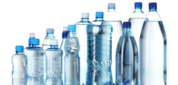
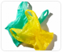
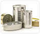
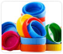
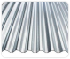
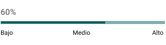
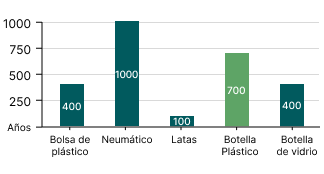

Botella de plástico
La mayoría de botellas de plástico se fabrican de un polímero denominado polietileno tereftalato o PET. Se empezó a usar en la fabricación de botellas en 1976 como envase de bebidas.
Junto con la botella de plástico, también puedes reciclar:
-

Bolsas de plástico
-

Latas
-

Tapas de plástico
-

Metal y chapas
- Lava los materiales antes de llevarlos al centro de reciclaje.
- Acude con barbijo al lugar.
- Retira etiquetas del envase.
- Si es una botella, separa tapas con sus respectivos materiales.

Se califica un nivel de impacto medio a alto ya que tarda en degradarse de 100 a 1000 años.
